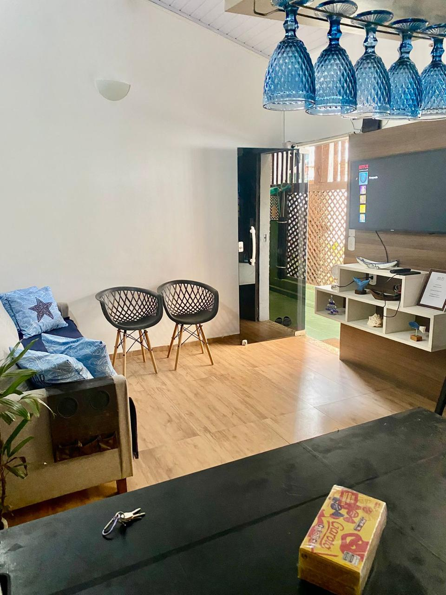
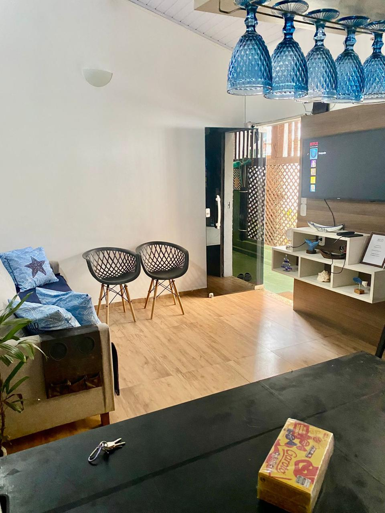

Casa no Centro de Búzios
Alugue Temporada
Olá querido(a)! Já pensou em ter uma experiência ainda mais completa em Búzios? Nem todo mundo quer se limitar a um quarto de pousada, por isso tenho uma opção especial para você: a Casa Buziana! É uma casa completa e aconchegante, localizada a apenas 100 metros da famosa Rua das Pedras, no coração de Búzios.
Muitas vezes, principalmente em alta temporada, os valores das pousadas se equiparam ao de uma casa completa. Pensando nisso, ofereço esta opção maravilhosa para você aproveitar Búzios com mais espaço, privacidade e conforto. A casa comporta até 6 pessoas confortavelmente, tem cozinha totalmente equipada (perfeita para preparar aquele café da manhã ou jantar especial), 3 quartos aconchegantes, uma ampla sala de estar e banheiro completo.


 


A localização é simplesmente perfeita! Você estará a poucos passos de tudo que Búzios tem de melhor:
Distâncias a pé:
De carro:
Além disso, a apenas 50 metros da casa você encontra o Mercado Econômico com hortifrúti, padaria, farmácia, restaurantes e lojas variadas. E não se esqueça que a Rua das Pedras oferece os melhores restaurantes da cidade e uma cervejaria artesanal para você aproveitar!
Imagine voltar de um dia de praia e ter um espaço só seu, com a liberdade de preparar um lanche, assistir TV na sala ampla, ou simplesmente relaxar com sua família ou amigos em um ambiente privativo. É uma experiência completamente diferente e muito mais aconchegante!
- Capacidade para até 6 pessoas
- Cozinha completa e equipada
- Localização privilegiada (100m da Rua das Pedras)
- Ambiente privativo e aconchegante